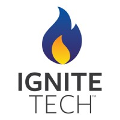
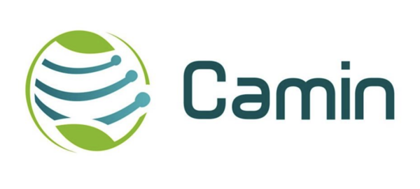
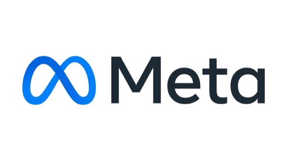
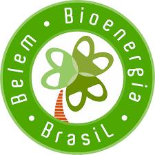

Enterprise anomaly detection platform
Project Lead · IgniteTech · 2025 – nowReal-time anomaly detection for enterprise appliances: ML pipelines feeding agentic systems on distributed AWS, with team leadership through production deployment.
Eight years moving between research, data leadership and AI engineering, from a physics lab in Rio to production AI platforms for enterprise software.

I build AI systems that detect anomalies at scale, make legacy platforms smarter, and turn organizational knowledge into a compounding asset. I sit at the intersection of machine learning and AI engineering, product development, and technical leadership.
Extensive research in effective temperatures defined for generalized Langevin equations, resulting in peer-reviewed publications and the thesis Temperaturas Efetivas em Sistemas Atérmicos Simples. See Research.
Developed automated integration tests for financial proof and transaction validation.

Developed integrated hardware, software and data science solutions for industrial waste management, in partnership with Ternium.
Organized a hackathon in collaboration with researchers from CBPF, LNCC and Fiocruz in response to the Covid-19 pandemic. Participants were mentored in developing technological solutions across public health, education, and socioeconomic development.
Real-time anomaly detection for enterprise appliances: ML pipelines feeding agentic systems on distributed AWS, with team leadership through production deployment.
LLM assistants that expose legacy industrial platforms through natural language, integrating domain knowledge bases via RAG pipelines and MCP servers.
Architected the continuous-evaluation and activity-metrics layer of a company-wide initiative that turns team expertise into LLM-ready knowledge repositories.

Contributed with a large group of technical and non-technical leaders to the 2024 NIST framework update on responsible AI and AI alignment, particularly on red teaming and synthetic data.
Led development of automated software refining the use of causal inference methodologies in marketing analytics.
Supervised a software tool and data infrastructure that expedite behavioural research data processing and analysis.
LLM RAG engine backed by a Neo4j knowledge graph supporting the consultancy business.
Year-long roadmap for data infrastructure, guiding the move from bare metal to cloud; solved data fragmentation and opened data access to downstream applications.
Prototype providing asset health scores from causal analysis of alarm time series and machine stoppage records.
ML approaches to predict sensor evolution, identify anomalies and predict failures in locomotives.

Fault prediction from feature-importance evolution over performance-driven boiler assets; led the MLOps infrastructure and workflow.
Led the data science team building Keras neural networks that infer fatigue damage in oil platforms from sensor data.
Evaluated approaches to causal relationship identification in data for high-impact business decisions.
IoT fatigue-damage tracking device for oil platforms running a local MLP model on TensorFlow Lite.
Portuguese (native) · English (fluent) · French (advanced) · Spanish (intermediate)
HackingRio 2018 · Cleantech Cluster Champion